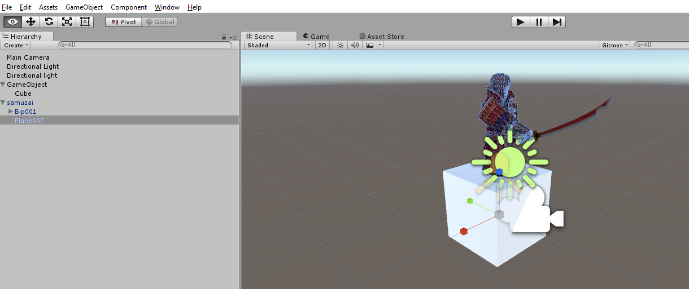
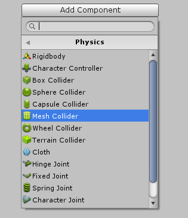
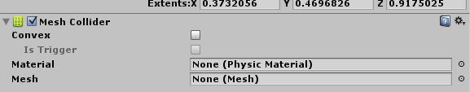
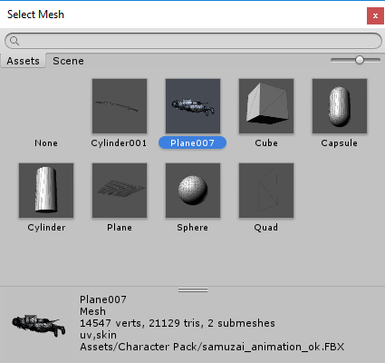

We'll need to add in a collider in game, so that we can interact, or kill it.
In the Hierarchy window, click on the Plane007. This is the same object that has the Skinned Mesh Renderer.

Whereas for the blocks, we've always chosen a Box Collider, we'll try to add a Mesh Collider to this animation. The Mesh colliders are more resource intensive, as they form around the shape of the object, but make more sense when adding an entity you want to interact with.
Note: Some animated avatars don't have a clear mesh to use, so you may have to resort to using a block collider.
In the Inspector window, click on "Add Component" -> "Physics" -> "Mesh Collider"

The Mesh Collider Component is then added.

At the end of the Mesh text box, click on the circle to select which Mesh you want to use. The mesh is basically the skin of the avatar.

Select the "Character" Mesh. Similar to when we added the Animations, you want to be sure to select the right mesh for the character.
If your Mesh is laying down, while your avatar is standing up, look at the Transform. Adjust the rotation of the object until the Mesh lines up to the character.
Created with the Personal Edition of HelpNDoc: Easily create iPhone documentation